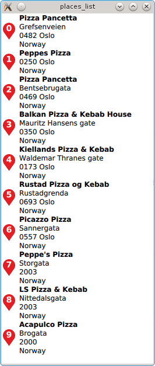

Places List (QML)
The Places List example demonstrates how to search for and display a list of places using a ListView.

Running the Example
To run the example from Qt Creator, open the Welcome mode and select the example from Examples. For more information, visit Building and Running an Example.
The Places List example demonstrates how to search for a list of places in a certain area and displays the result using a ListView. In this particular case, a search for places associated with the term food is performed.
Performing a Place Search
To write a QML application that will show places in a list, we start by making the following import declarations.
import QtQuick import QtPositioning import QtLocation
Instantiate a Plugin instance. The Plugin is effectively the backend from where places are sourced from. Depending on the type of the plugin, some mandatory parameters may be need to be filled in. The most likely type of PluginParameter are some form of service access token which are documented in the service plugin. In this snippet the osm plugin is used which does not require any further parameter:
Plugin { id: myPlugin name: "osm" //specify plugin parameters as necessary //PluginParameter {...} //PluginParameter {...} //... }
Next we instantiate a PlaceSearchModel which we can use to specify search parameters and perform a places search operation. For illustrative purposes, update() is invoked once construction of the model is complete. Typically update() would be invoked in response to a user action such as a button click.
PlaceSearchModel { id: searchModel plugin: myPlugin searchTerm: "food" searchArea: QtPositioning.circle(startCoordinate, 5000 /* 5 km radius */); Component.onCompleted: update() }
Finally we instantiate a ListView to show the search results found by the model. An inline delegate has been used and we have assumed that every search result is of type PlaceSearchesult. Consequently it is assumed that we always have access to the place role, other search result types may not have a place role.
ListView { anchors.fill: parent model: searchModel delegate: Component { Row { spacing: 5 Marker { height: parent.height } Column { Text { text: title; font.bold: true } Text { text: place.location.address.text } } } } }